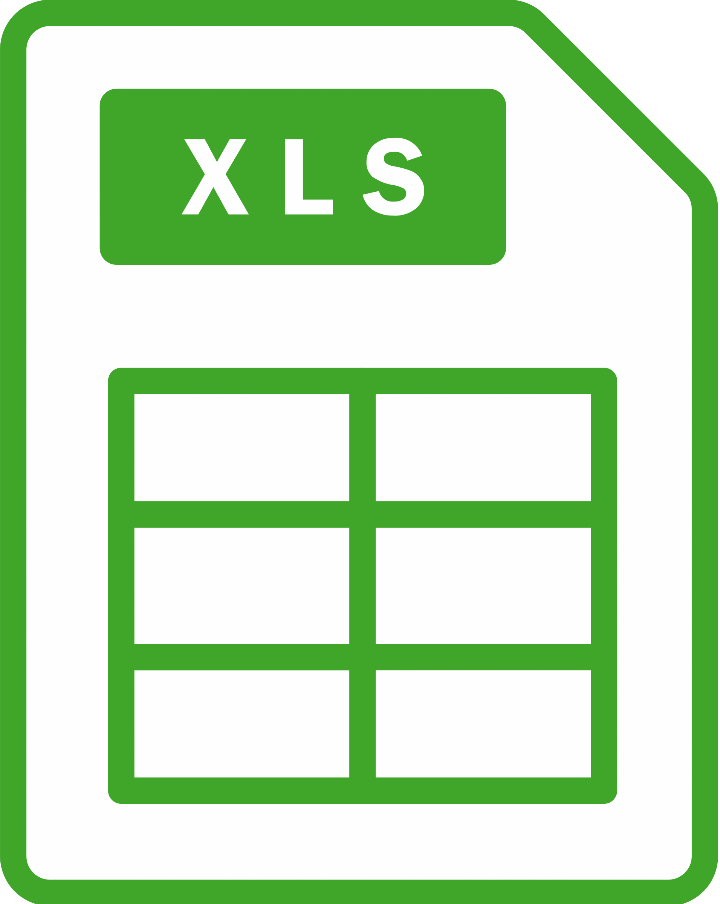
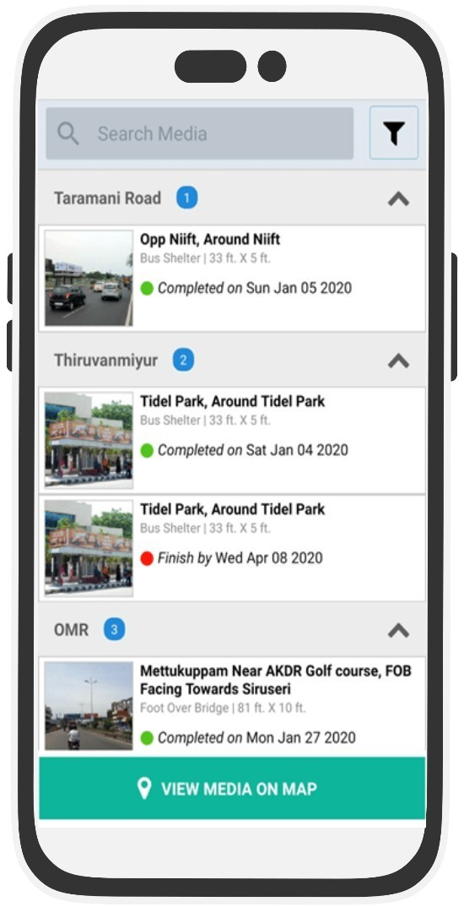
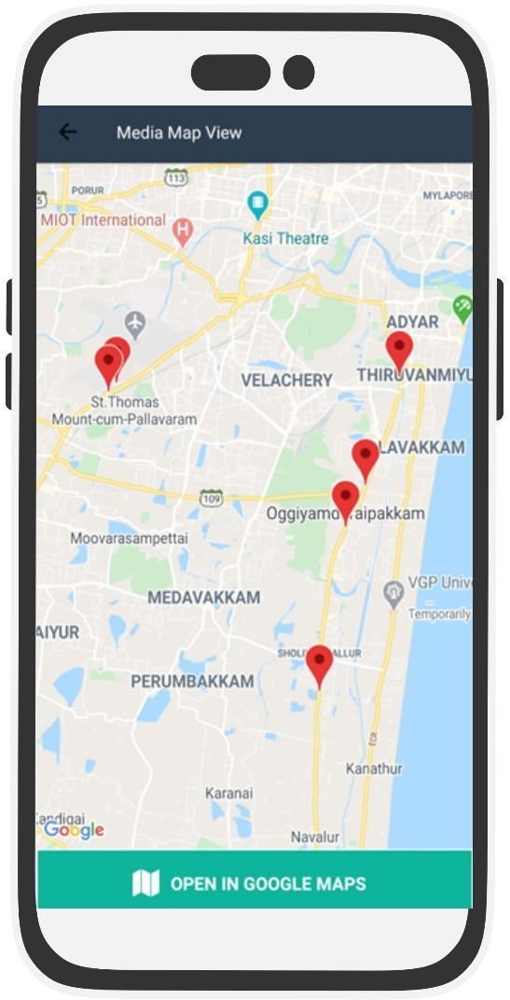

CAMPAIGN MONITORING
Monitor Campaign
Manage your campaign monitoring by assigning jobs
and image upload logs.
SETUP MONITORING
QUICK UPLOAD USING EXCEL

SETUP MONITORING WITH A FEW CLICKS
IN LESS THAN 1 MINUTE

